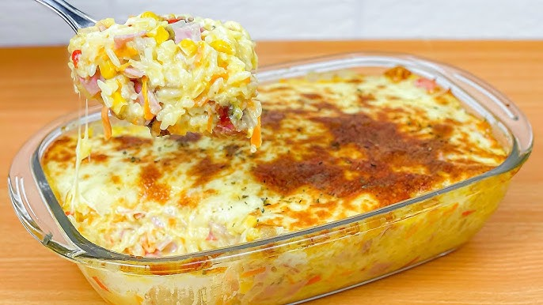

Arroz de Forno Cremoso
Ingredientes:
- 2 xícaras de arroz cozido
- 1 lata de milho
- 200g de presunto picado
- 200g de queijo mussarela
- 1 caixinha de creme de leite
- Orégano a gosto
Modo de preparo:
Misture tudo, coloque em uma travessa, cubra com queijo e leve ao forno para gratinar por 15 minutos.

Lasanha à Bolonhesa
Ingredientes:
- 500g de carne moída
- 1 cebola picada
- 2 dentes de alho
- 1 sachê de molho de tomate
- 200g de queijo mussarela
- 200g de presunto
- Massa para lasanha pré-cozida
- Sal e orégano a gosto
Modo de preparo:
Refogue a carne com alho e cebola, adicione o molho e tempere. Monte camadas de molho, massa, presunto e queijo. Finalize com queijo e leve ao forno por 30 minutos a 200°C.